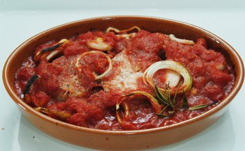

| Zutaten für 4 Personen: | |
| 4 | Tranchen Kabeljau |
| 2 EL | Butter oder Margarine |
| 500 g | Kartoffeln |
| 500 g | Tomaten |
| 1 | Zwiebel, gross |
| 1/2 | Zitrone |
| 2 EL | Petersilie |
| Salz, Pfeffer | |
| ev. 2 dl | Sherry, trocken |
Kartoffeln schälen und in 3 mm dicke Scheiben schneiden. In wenig Salzwasser halbgar kochen.
Die Zwiebel in Scheiben schneiden und in 1 Esslöffel Butter goldgelb dünsten
Eine flache Gratinform ausbuttern, und die Kartoffeln hineinlegen. Die Fischtranchen darüber anordnen. Die Tomaten halbieren, würzen und ebenfalls in die Gratinform geben. Die Zwiebelringe auf die Tomaten verteilen; ebenso die Zitronenscheiben. Die restliche Butter leicht erwärmen, über den Fisch giessen und Sherry darüber träufeln. Im gut vorgeheizten Ofen (190°C) ca. 30 Minuten überbacken. Zuletzt mit Petersilie bestreuen.
Herbert Eigenmann, Code: KBG
Am 4.1.2004 gelang das Rezept recht gut. Als Schwierigkeit stellte sich eine ungünstige Gratinform heraus und das Fehlen von Kabeljau-Tranchen. Ich bereitete das Rezept mit 250g Kingklip Filet zu, der wenn nicht der gleiche, so doch ein sehr ähnlicher Fisch ist. Am 17.5.2007 habe ich das nochmals gemacht um es zu fotografieren. Der tiefgefrorene Kabeljau war sehr grätig und irgendwie blöd geschnitten den die Gräten waren sehr kurz.
@LINKBACK_TAG@ @WAKELOCK@